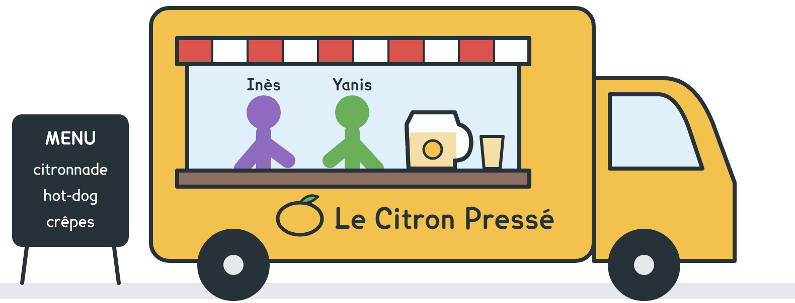
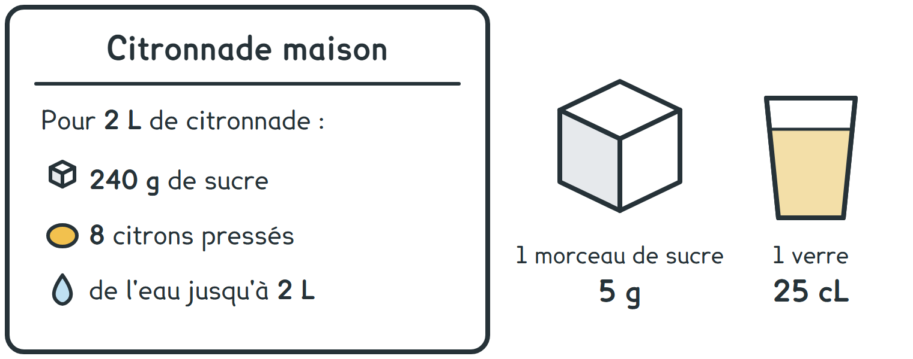
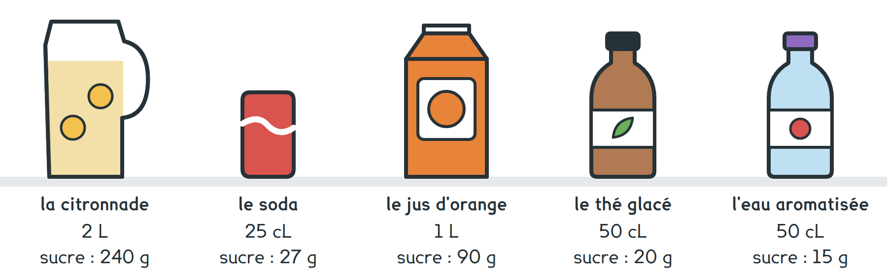
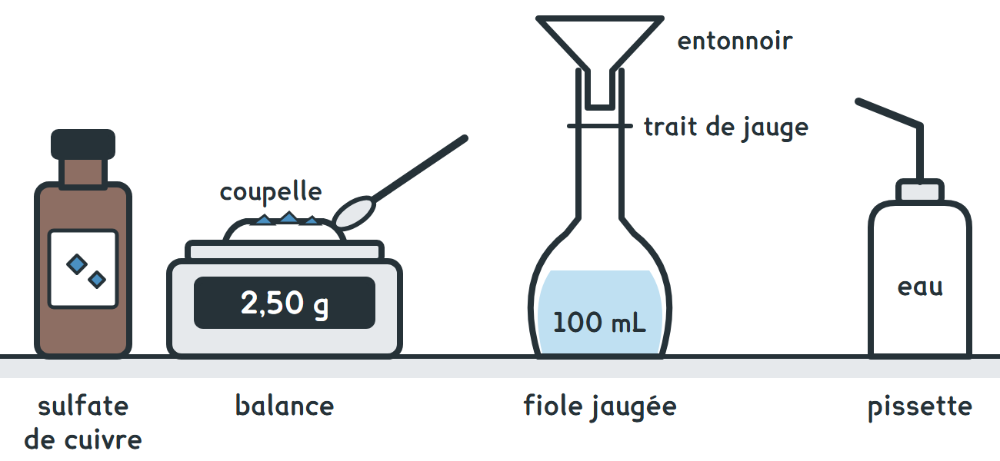

AA Algèbre et analyseCN Calculs numériquesAU Automatismes
La question

Le food-truck d’Inès et Yanis, et sa citronnade maison sur le comptoir.
La citronnade est-elle trop sucrée ? Combien de morceaux de sucre dans un verre, à ton avis ? Écris ta réponse avant de commencer : on la relira à la fin de la séquence.
La recette

La fiche recette : 240 g de sucre pour 2 L de citronnade. À côté, un morceau de sucre de 5 g et un verre de 25 cL.
Deux fois plus de citronnade, deux fois plus de sucre : le sucre et le volume sont proportionnels. On cherche d’abord le sucre d’un litre, puis on multiplie par le volume voulu.
Série · AA
Le sucre de la citronnade
1 L
4 L
0,5 L
0,25 L
Le sucre d’un litre d’abord : 240 g pour 2 L, on divise par 2. Ensuite, on multiplie ce nombre par le volume.
Exercice · CN
Les morceaux d’un verre
Un verre fait 25 cL, soit 0,25 L, et un morceau de sucre pèse 5 g. Combien de morceaux de sucre dans un verre de citronnade ?
Le sucre d’un verre de 0,25 L se lit dans la série juste au-dessus. Puis : combien de fois 5 g dans cette masse ?
concentration massique = masse ÷ volume
la massedu soluté, ici le sucre — en grammes (g)
le volumede la solution, ici la citronnade — en litres (L)
la concentrationen grammes par litre (g/L)
240 g de sucre dans 2 L : 240 ÷ 2 = 120 g/L.
Croire que la carafe est plus sucrée que le verre. Elle contient plus de sucre, mais aussi plus de citronnade : c’est la même boisson, 120 g dans chaque litre, au verre comme à la carafe.
La boisson la plus sucrée

Cinq boissons et leur étiquette : la citronnade, 2 L et 240 g de sucre ; le soda, 25 cL et 27 g ; le jus d’orange, 1 L et 90 g ; le thé glacé, 50 cL et 20 g ; l’eau aromatisée, 50 cL et 15 g.
Pour comparer deux boissons, on ne compare pas leur sucre : une carafe en a toujours plus qu’un verre. On compare leur concentration, le sucre d’un litre.
Série · AA
La concentration de chaque boisson
le soda
le jus d’orange
le thé glacé
l’eau aromatisée
Le volume en litres d’abord : 25 cL = 0,25 L, 50 cL = 0,5 L. Puis le sucre divisé par ce volume.
La boisson la plus sucrée des cinq est : la citronnade | le soda | le jus d’orange
Comparée au soda, la citronnade maison est : plus sucrée | moins sucrée
Préparer une solution, sur la tablette

La paillasse : le flacon de sulfate de cuivre, la balance et sa coupelle, la fiole jaugée de 100 mL et son entonnoir, la pissette.
Dans l’atelier de physique-chimie, on prépare une solution bleue de sulfate de cuivre. Le solide disparaît dans l’eau, mais il est toujours là : on dit qu’il est dissous.
Faire la tare, la coupelle posée sur la balance.
Peser 2,50 g de sulfate de cuivre dans la coupelle.
Verser le solide dans la fiole jaugée, par l’entonnoir.
Remplir d’eau aux trois quarts, boucher, retourner jusqu’à ce que tout soit dissous.
Compléter avec la pissette jusqu’au trait de jauge, puis retourner encore.
Soluté, solvant, solution. Le solide dissous est le soluté, l’eau est le solvant, le mélange obtenu est la solution.
Exercice · AA
La concentration préparée
On a dissous 2,50 g de sulfate de cuivre dans une fiole jaugée de 100 mL. Quelle est la concentration de la solution, en g/L ?
Le volume en litres d’abord : 100 mL, c’est un dixième de litre. Puis la masse divisée par ce volume.
Je m’entraîne
Série · CN
Série 1 — convertir en litres
25 cL
250 mL
33 cL
1 500 mL
75 cL
1 L = 100 cL = 1 000 mL. Des centilitres, on divise par 100 ; des millilitres, par 1 000.
Série · AA
Série 2 — la concentration
60 g dans 2 L
10 g dans 0,5 L
30 g dans 0,25 L
90 g dans 3 L
50 g dans 500 mL
La masse divisée par le volume en litres. Diviser par 0,5, c’est multiplier par 2 ; diviser par 0,25, c’est multiplier par 4.
La concentration se calcule par : masse ÷ volume | volume ÷ masse
Le volume doit être en : centilitres | litres
Un verre et une carafe de la même citronnade ont : la même concentration | des concentrations différentes
Pour ceux qui ont fini
Exercice · AA
La fontaine
La fontaine du food-truck contient 8 L de citronnade à 120 g/L. Combien de grammes de sucre contient-elle ?
Cette fois on multiplie : la concentration par le volume en litres.
Exercice · AA
La grande canette
Une canette de 50 cL du même soda, à 108 g/L. Combien de grammes de sucre contient-elle ?
50 cL en litres d’abord, puis la concentration multipliée par ce volume.
Exercice · AA
Le paquet de sucre
Avec 1 kg de sucre, combien de litres de citronnade à 120 g/L peut-on préparer ? Arrondir au dixième.
1 kg = 1 000 g. Chaque litre en prend 120 g : combien de fois 120 g dans 1 000 g ?
Ce qui reste de la séance
Une masse de sucre seule ne dit rien : 30 g, c’est beaucoup dans un verre et peu dans une fontaine. La concentration ramène tout à un litre, et c’est elle qui compare les boissons.
Ce site rappelle la méthode. Aucun corrigé, rien n'est noté.